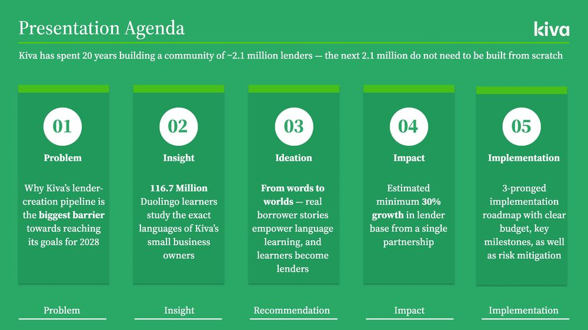

01
Strategy · Consulting Case
A Kiva × Duolingo
partnership.
For 180 Degrees Consulting’s second-round case I proposed that Kiva — the microlending nonprofit — partner with Duolingo to grow its lender base by embedding real borrower stories inside language lessons. Words to worlds: you encounter María through a Spanish module, and the door to lending is right there. Twelve slides, four appendices, every figure sourced.
Market Sizing
Partnership Strategy
Figma
2026
Read the deck (PDF, 6 MB)

Fig. 01 — Agenda spread, Kiva × Duolingo deck